검색에서 추천으로: SEO, AEO, GEO
예전에는 사람들이 검색창에 '청담동 피부과'를 치고 나온 링크를 눌러 정보를 얻었어요. 이제는 AI에게 '여드름 치료 잘하는 청담동 피부과 추천해 줘'라고 부탁해요. 마케터가 할 일도 바뀌어요. AI가 내놓는 답변 안에 우리 콘텐츠가 들어가게 만드는 거예요.
영상은 이 변화를 세 단계로 나눠 설명해요. 키워드를 제목과 본문에 잘 넣으면 되던 SEO에서, 질문에 바로 답하는 콘텐츠를 만드는 AEO로, 다시 AI가 가져다 쓰기 좋게 정리하는 GEO로 넘어가는 흐름이에요.
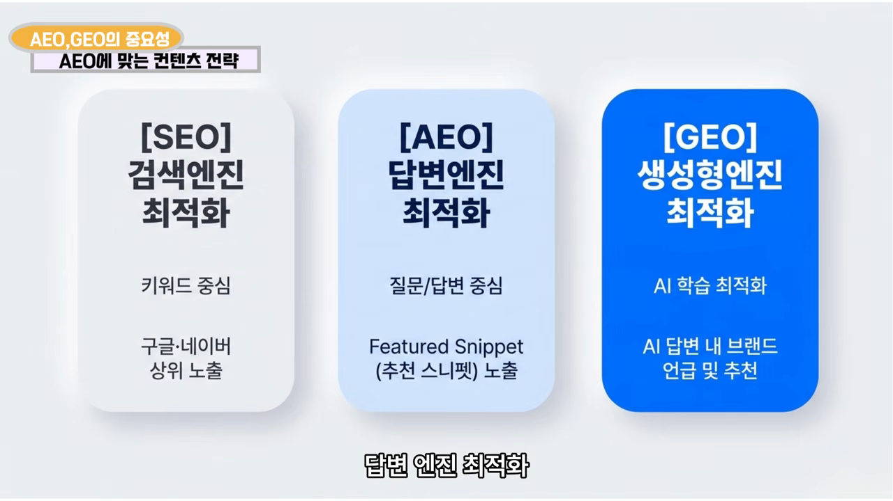
| 구분 | 중심 | 목표 | 콘텐츠 예시 |
|---|---|---|---|
| SEO (검색엔진 최적화) | 키워드 | 구글·네이버 상위 노출 | 제목·본문에 '청담동 피부과' 넣기 |
| AEO (답변엔진 최적화) | 질문과 답변 | 추천 스니펫(Featured Snippet) 노출 | '여드름 치료 잘하는 청담동 피부과는?' 같은 질문·답변 |
| GEO (생성형엔진 최적화) | AI 학습·인용 | AI 답변 안에서 브랜드 언급·추천 | 목차, 요약 박스로 정리된 글 |
왜 사업자에게 위기일까요
홈페이지로 사람을 모아야 정보를 전하고 물건을 팔 수 있어요. 그런데 AI가 답을 다 정리해 주니 사람들이 링크를 누르지 않아요. 영상에서는 이걸 검색엔진의 제로클릭 현상이라고 불러요. 구글 검색 결과 위에 AI 답변이 뜨고, 그 아래 작게 붙은 출처 링크에라도 들어가야 한다는 얘기예요.
GEO 원칙 1·2: 믿을 만한 출처와 Q&A 구조
AI가 내 콘텐츠를 잘 알아보게 하려면 두 가지를 봐야 해요. 하나는 채널이에요. 티스토리나 워드프레스로 만든 블로그가 AI에게 더 유리하다고 해요. 다른 하나는 형식이에요. 요즘 AI는 글만 읽지 않고 이미지와 영상도 알아봐요. 그래서 이미지와 영상도 AI가 잘 인식하게 만들어야 해요.
영상은 GEO의 핵심이 크게 네 가지라고 소개해요. 다만 이름을 붙여 설명하는 건 세 가지예요. 이 섹션에서 앞의 두 가지를, 다음 섹션에서 세 번째를 다뤄요.
1. 신뢰도 높은 출처를 인용하세요
AI는 검증된 전문가 의견이나 공식 기관 데이터를 좋아할 수밖에 없어요. 그래서 출처를 분명히 밝혀야 해요. 그 출처가 내 제품이나 브랜드와 관련이 있으면 더 좋아요.
2. 고객이 할 질문을 미리 Q&A로 넣으세요
AI는 질문과 답변 구조를 좋아해요. 핵심은 고객이 AI에게 어떤 식으로 물을지 미리 짐작하는 거예요. 펜션이라면 사람들은 '서울 펜션 추천해 줘'처럼 묻지 않아요. '후기 좋은 펜션', '수영장 있는 펜션', '아이와 갈 만한 펜션'처럼 조건을 붙여 물어요.
그 질문을 콘텐츠에 대놓고 넣으면 돼요. 예를 들어 '이 펜션은 후기 좋기로 유명한데 비결이 뭔가요?'라고 묻고, 사장님이 '고객 후기에 하나하나 답글을 달아요'라고 답하는 식이에요. AI가 비슷한 질문을 받았을 때 그 답을 가져가기 쉬워져요.
| 고객이 실제로 물을 법한 질문 | 콘텐츠에 넣을 Q&A |
|---|---|
| 후기 좋은 펜션 추천해 줘 | 후기 관리 비결을 묻고 답하기 |
| 수영장 있는 펜션 추천해 줘 | 수영장 시설을 묻고 답하기 |
| 아이와 함께 갈 만한 펜션 추천해 줘 | 아이 동반 편의를 묻고 답하기 |
GEO 원칙 3: AI 답변 속 언급을 재세요
세 번째 원칙은 측정이에요. 영상에서는 이걸 LLM 가시성 점수라고 불러요. 우리 브랜드가 AI 답변에 얼마나 자주 나오는지를 재 보자는 거예요.
화장품 브랜드라면 '40대 여성이 쓸 만한 주름 개선 화장품 추천해 줘'라고 물었을 때 우리 제품이 몇 번 나오는지 세어 봐요. 측정이 돼야 고칠 점이 보이고 전략도 세울 수 있어요.
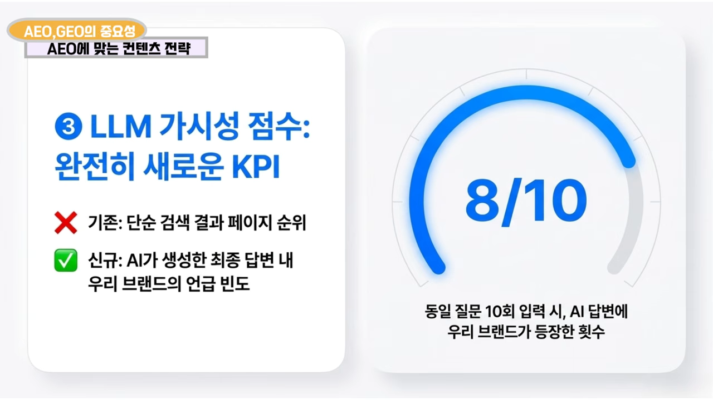
| SEO 시대 | AEO·GEO 시대 | |
|---|---|---|
| 무엇을 재나요 | 우리 글이 검색 결과 몇 위에 있는지 | AI 답변에 우리 브랜드가 들어가는 비율 |
| KPI 예시 | 몇 위 안에 노출시키기 | 같은 질문 10번 중 몇 번 언급되는지 |
진행자도 말은 쉬운데 와닿지는 않는다고 해요. 그래도 출연자는 이 비율이 앞으로 분명히 새로운 KPI가 될 거라고 강조해요.
타겟 AI, 채널, 홈페이지 점검
여기서부터는 실전 팁이에요. 영상은 다섯 가지로 정리해요. 타겟 AI 고르기, 열린 채널 고르기, 홈페이지 크롤링 구조 점검, AI 싱킹 모드로 거꾸로 추적하기, 임시 채팅으로 편향 없애기예요. 이 섹션은 앞의 세 가지를 다뤄요.
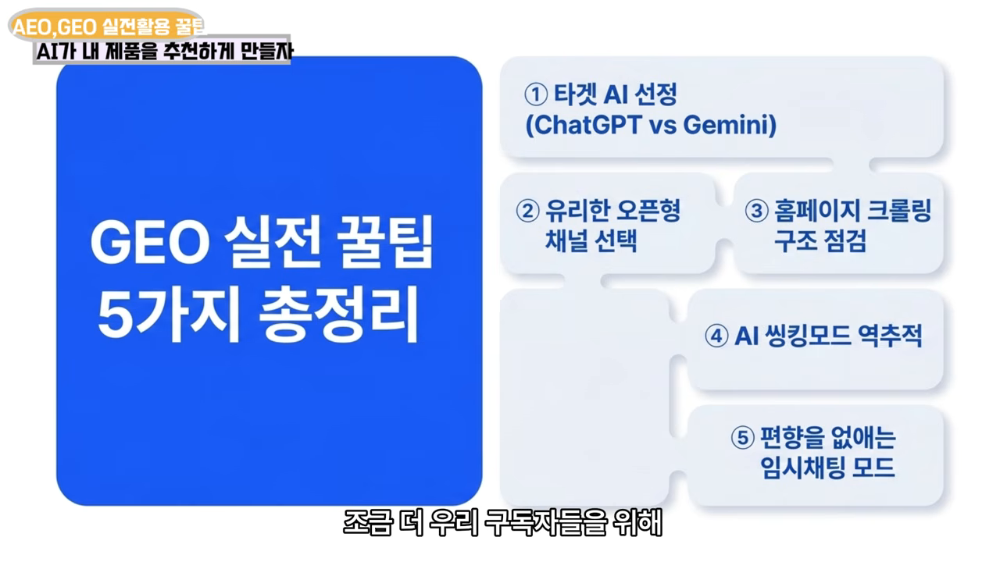
타겟 AI를 하나 정하세요
모든 AI에 다 노출되겠다는 건 사실상 불가능해요. 우리나라에서는 무료 사용자까지 치면 ChatGPT를 가장 많이 쓰고, 그다음이 Gemini예요. 둘은 검색하는 방식이 달라서 한 번에 둘 다 노리기가 쉽지 않아요.
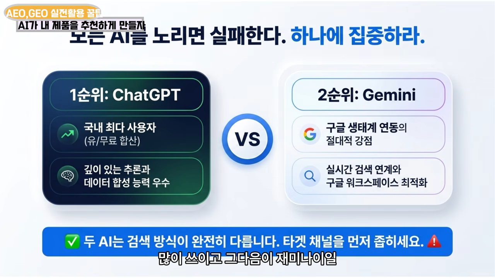
화면에는 말로는 나오지 않은 내용도 하나 있어요. ChatGPT는 Bing과, Gemini는 Google과 연결돼 있다고 보고, Bing 웹마스터 도구에 꼭 등록하라고 적혀 있어요.
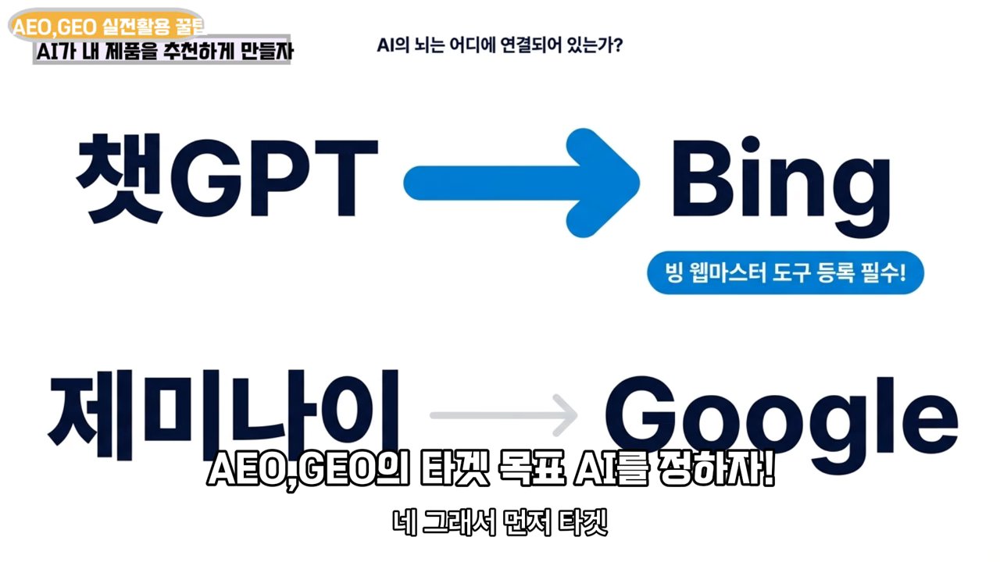
AI가 읽을 수 있는 채널에 올리세요
ChatGPT와 Gemini 둘 다 네이버 블로그를 잘 못 읽어요. 네이버가 바깥에 닫혀 있는 플랫폼이라 AI가 들어가기 어렵기 때문이에요. GEO를 노린다면 티스토리 블로그나 워드프레스 블로그, 언론사 보도자료가 낫다고 해요.
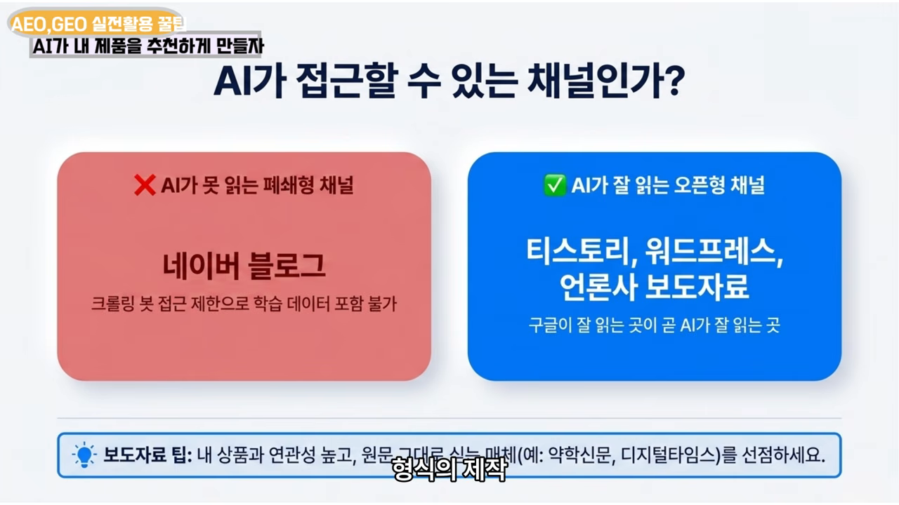
홈페이지 SEO 설정을 빼먹지 마세요
내 홈페이지도 AI가 잘 크롤링할 수 있는 구조여야 해요. 결국 이것도 홈페이지 SEO예요. 카페24 같은 쇼핑몰 빌더는 설정 화면에서 SEO 항목을 채울 수 있어요. 이걸 빼먹는 사람이 많다고 해요.
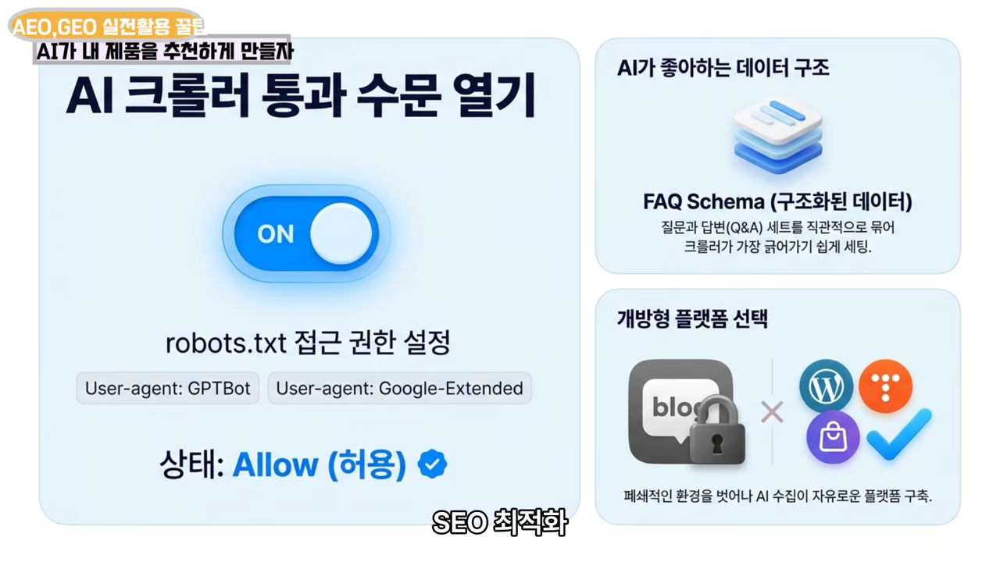
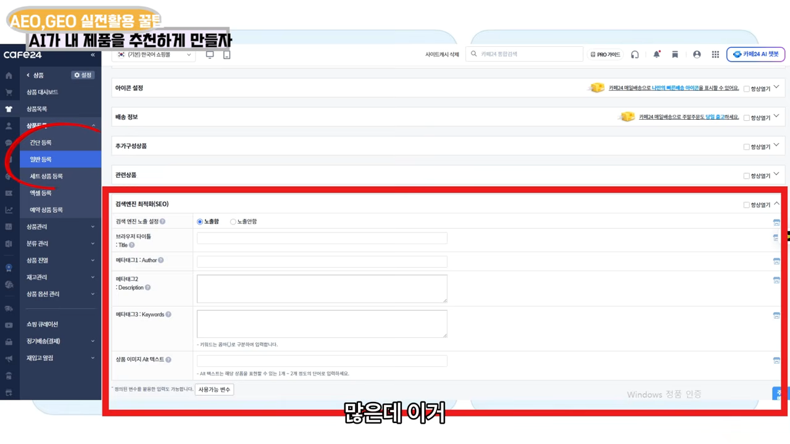
AI가 먼저 찾는 사이트를 거꾸로 추적하기
영상이 가장 힘줘 말하는 팁이에요. 타겟 AI에 내가 노리는 질문을 직접 던져 보고, AI가 답을 찾는 과정을 거꾸로 따라가는 방법이에요.
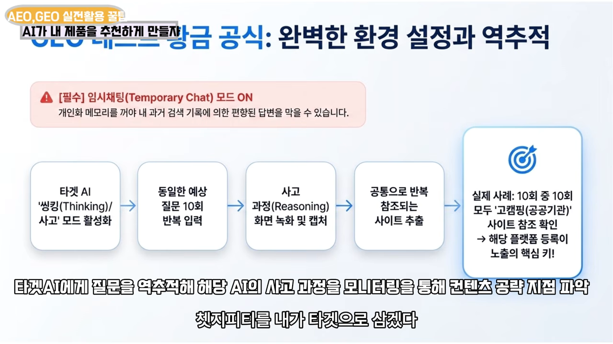
- ChatGPT나 Gemini에서 빠른 모드 대신 싱킹 모드를 켜요. 그러면 AI가 생각하고 검색하는 과정이 화면에 죽 보여요.
- '주름 개선에 좋은 화장품 추천해 줘'처럼 내가 노리는 질문을 던져요.
- 사고 과정은 순식간에 지나가니 화면을 녹화해요. PC 브라우저에서 녹화하면 어렵지 않아요.
- 같은 질문을 10번 반복해요. LLM은 물을 때마다 똑같이 검색하지 않기 때문이에요.
- 10번 중에 공통으로 먼저 찾아보는 사이트를 골라내고, 그 사이트를 공략해요.
실제 사례: 글램핑장
출연자는 지인의 글램핑장을 컨설팅하면서 이 방법을 써 봤어요. ChatGPT에 '어느 지역 괜찮은 글램핑장 추천해 줘'를 10번 물었더니 10번 모두 먼저 찾아본 사이트가 고캠핑이었어요. 들어가 보니 공공기관이 운영하는 캠핑 정보 플랫폼이었어요. 공공기관 사이트라 AI가 권위와 신뢰 점수를 더 주고 먼저 찾는다는 해석이에요.
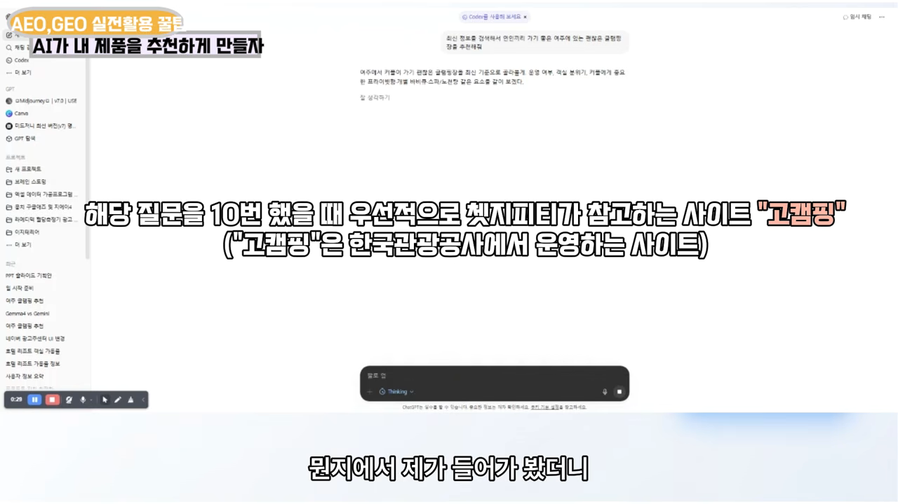
편집 자막은 이어서, 고캠핑에 최신 정보를 등록했더니 ChatGPT가 그 글램핑장을 추천하기 시작했다고 덧붙여요. 키워드마다 AI가 먼저 보는 사이트가 따로 있으니, 업종별로 직접 확인해 봐야 해요.
테스트할 때는 왜 임시 채팅을 켜야 할까요?
이 테스트를 할 때 꼭 지킬 게 있어요. 개인화를 끄고 물어봐야 해요. ChatGPT와 Gemini는 지금 개인화 메모리가 있어서 예전 대화를 기억하고 다음 답변에 반영해요. 내가 우리 브랜드 얘기를 많이 했다면 AI가 그걸 기억하고 치우친 답을 줄 수밖에 없어요.
방법은 두 서비스가 같아요. PC 화면 오른쪽 위에 있는 임시 채팅 토글을 켜고 물어보면 돼요. 그러면 대화 내용이 개인화 메모리에 저장되지 않아요. 진행자의 말처럼 로그인하지 않고 검색하는 것과 비슷하다고 보면 돼요.
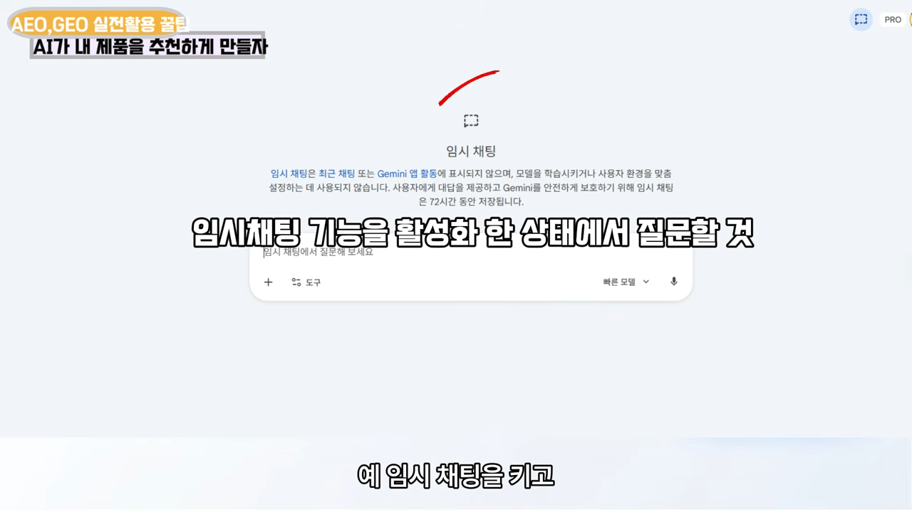
이런 테스트를 할 때는 반드시 임시 채팅 버튼을 누르고 물어봐라. 이게 핵심입니다.
— 영상 14:32
SEO, AEO, GEO는 한 세트예요
진행자가 전체를 이렇게 정리해요. 티스토리 같은 열린 채널에 콘텐츠를 만들고, E-E-A-T 기준에 맞춰 질문과 답변 형식으로 쓰고, 관련 언론 기사를 받아 블로그에 반영해 신뢰를 더하라는 거예요.
출연자는 하나를 덧붙여요. GEO를 한다고 SEO를 버려도 되는 건 아니에요. 고객이 AI에게 던질 질문의 키워드를 콘텐츠에 잘 배치하는 기본기가 여전히 들어가야 해요. 그래서 SEO, AEO, GEO는 따로가 아니라 한 세트예요.
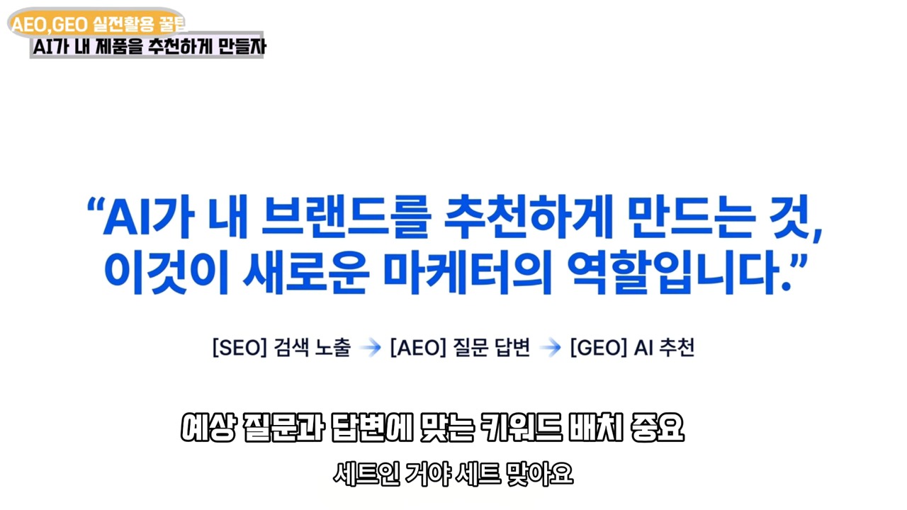